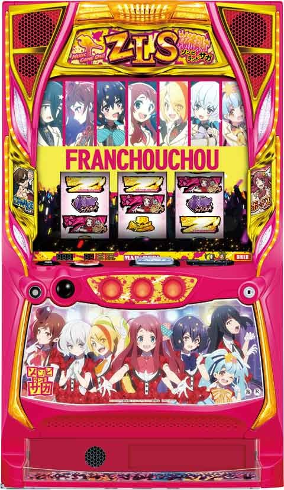
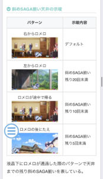
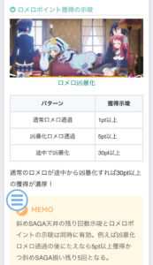
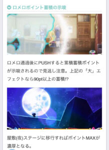
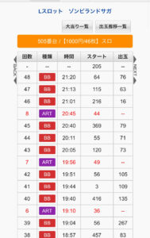

Lゾンビランドサガ

【天井情報】
777G
リセット時は555G
(徒花 ボーナス&ST間)
斜めSAGA揃い30回目
(ST間)
※天井到達で超高確状態へ移行
※斜めSAGA回数はメニューや液晶から確認出来ない？
【リセット判別】
大都はガックンなし
【有利区間について】
エンディング到達で有利区間リセット。
ゾンビランドサガリベンジかネバーエンディングサガに突入。
狙い目
【リセット狙い】
260G(徒花ボーナス&ST間)
※朝イチのみ
【徒花ボーナス&ST間天井狙い】
450G
【ST間天井狙い】
1150Gから
※筐体や店データ機から斜めSAGA揃いの回数は把握出来ない。
・残り斜めSAGAの示唆

【即やめ台、超高確率状態狙い】
徒花ボーナスやST終了後即やめ台は内部的に高確率状態の可能性がある。
10G以内やめは状態確認狙い出来そう？
天井到達後にST未突入は超高確率状態のまま？もし落ちてたらかなり美味しい？
液晶のステージで確認出来そう。
【ロメロポイント狙い】
100pt到達で次回CZが「待て！ロメロ」になる。
ロメロ通過後にPUSHすると蓄積ポイントの示唆が出る。
エフェクトが大の時は解放まで？
屋敷(夜ステージ)に移行すればポイントMAX濃厚。
獲得示唆

蓄積示唆

【LIVEポイント狙い】
紫は不問で打てそう。
赤、緑はボーダー下げれそう。
{kind=link}
【有利区間切れ狙い】
不明
やめ時
【徒花ボーナス後】
SAGA高確スタートの可能性あり。少し回して状態確認してやめ。
【ST終了後】
必ずSAGA高確スタート。状態を確認してやめ。
【状態の確認方法】
高確状態のサイン
・15枚役ベルが揃う
・平行SAGAが揃う
・セグ無し押し順ナビで順押しをしたらZが揃う
・セグ有り押し順ナビで1枚役が出る
やめ時のサイン
・セグ無し押し順ナビで順押しをしたらリプレイが揃う
・10Gは回して少なくともリプレイ1回は引いて、リプレイ図柄しか揃わなかったらやめ
・高確から転落すると15枚役が揃わない
【その他のやめ時】
プレミアムAT後は終了後1回目で再突入する可能性あるためもう一度ST入るまで打った方が良いかも？(非推奨)
ボナ&ST間天井到達後にST突入していない台は、内部的に超高確率状態のままなので、ST入るまで打てる。
超高確率状態中は夕方(パジャマ)ステージにいるため液晶からも判断可能？
その他
【データ履歴の見方】
画像のデータの場合、ST終了時はART履歴が上がる。
このデータは閉店のタイミングで、徒花ボーナス&ST間は205Gハマり、ST間は600Gハマっている。

参考元
基本情報
- メーカー: 大都技研
- 機械割: 97.9% 〜 111.2%
- 導入開始日: 2024年07月22日（月）
- ゲーム性概要: あの『ゾンビランドサガ』がSTタイプのAT機で登場。通常時はおもにCZからST（ゾンビランドサガ）を目指し、STとボーナスのループで出玉を増やすゲーム性だ。Vストックの大量ゲットに期待できる「鳥放題ボーナス」、上位STの「ゾンビランドサガリベンジ」やプレミアムAT「ネバーエンディングサガ」など強力な一撃要素も満載。 佐賀県限定の専用パネル（スロット ゾンビランドサガ 佐賀パネルver.）もあるので、ゾンサガファンはそちらも要チェック！


打ち方
打ち方・小役
打ち方（小役狙い）

押し順ナビ非発生時は基本的に全リールフリー打ちでOK。変則押しも可能だ。
［SAGA揃い］

あらゆる場面で活躍するレア役的な存在。通常時は揃った後、内部的に8G間のST状態へ突入する。このST状態でSAGAを連続で揃えることができればチャンスとなる。
リール制御
特定位置を狙った時の成立役
基本的に全リールフリー打ちかつ変則押し（ナビなし時）もOKだが、特定の位置を狙うことで成立役を楽しむことができる。 CZ＆ST中は左リール第1停止からリプレイが揃うことはないところも特徴だ。
［左リールBAR狙い］

左リールにBARを目押し。通常時・CZ＆ST中のどこでも楽しめる打ち方だ。

成立役：ハズレorベルorSAGA揃い

成立役：SAGA揃いorZ揃いorBAR揃い

成立役：ハズレorリプレイorSAGA揃いorZ揃い ※CZ＆ST中はリプレイ否定

成立役：リプレイor徒花ボーナスリーチ目 これは通常時のみの停止形。CZ＆ST中は徒花ボーナスがないので停止しない。
［左リールピンク7狙い］

CZ＆ST中専用の打ち方で、Z揃い時およびBAR揃い時は必ずサンド目が停止。SAGA揃い時はZ中段停止からしか揃わない。強めの演出が出た時にオススメだ。

サンド目停止で激アツ！

SAGA揃いは必ず上記停止形からになる。
1確・2確目・徒花ボーナスリーチ目

解析情報通常時
小役関連
通常時（非SAGA揃い高確）の小役確率
| 設定 | リプレイ | SAGA揃い |
|---|---|---|
| 1 | 1/4.5 | 1/35.9 |
| 2 | 1/4.5 | 1/35.4 |
| 3 | 1/4.5 | 1/33.9 |
| 4 | 1/4.5 | 1/32.5 |
| 5 | 1/4.5 | 1/30.5 |
| 6 | 1/4.5 | 1/29.2 |
SAGA揃い高確中の小役確率
| 役 | 確率 | |
|---|---|---|
| リプレイ | 1/4.0 | |
| SAGA揃い | 1/9.9 | |
| 押し順SAGA揃い | 1/89.2 | |
| Z揃い | 1/4.0 | |
| 押し順Z揃い | 1/89.2 | |
| BAR揃い | 高確A | 1/4096.0 |
| BAR揃い | 高確B | 1/409.6 |
| BAR揃い | 高確C | 1/364.1 |
※SAGA揃いの合算は1/8.9、Z揃いフラグの合算は1/3.8
通常時のBAR揃いはST直撃濃厚。Z揃いとリプレイ、押し順SAGA揃いと押し順Z揃いはそれぞれ同フラグで、状態に応じてどちらかが揃う制御となる。押し順Z揃いが有効になるのは、徒花クラッシュ・Z-ラッシュ・鳥放題ボーナス・絶頂SAGA中だ。
CZ高確滞在時
※WF…ウィーアーフランシュシュ
CZ高確滞在時
※WF…ウィーアーフランシュシュ
［SAGAレベル3］CZ当選率 ※当選率は通常・高確共通
※WF…ウィーアーフランシュシュ
SAGAレベル3は基本的に地下室ステージ中（移行前の前兆中も有効）と考えてOK。どの状況でも高設定ほどCZ当選率が高い。
本前兆中SAGA揃い時のCZ昇格率
CZはSAGAレベルに応じて抽選され、当選後は前兆中のSAGA揃いで種別の昇格を抽選。 当選時はウィーアーフランシュシュなら絶叫ゾンビ屋敷、絶叫ゾンビ屋敷なら待て！ロメロへ昇格する（1段階ずつ）。
CZ本前兆中のCZ種別昇格率
| 昇格パターン | 昇格率 |
|---|---|
| ウィーアーフランシュシュ→絶叫ゾンビ屋敷へ | 20.3% |
| →絶叫ゾンビ屋敷→待て！ロメロへ | 0.4% |
内部状態関連
CZ高確概要

リプレイ成立時の抽選と100G消化ごとに移行するSAGAレベルアップ率やCZ当選率が優遇。CZ高確中はおもにパジャマステージへ移行する。
CZ高確 性能
| 項目 | 内容 |
|---|---|
| 突入契機 | 100G消化ごと、リプレイの一部 |
| 継続ゲーム数 | ゲーム数契機：20G以上、リプレイ契機：10G以上 |
| 滞在中の特徴 | SAGAレベルアップ率やCZ当選率が優遇 |
| その他 | ゲーム数とリプレイ契機の高確が複合すると 超高確へ移行 |
SAGA揃い高確
SAGA揃い時の約50%で移行する状態で、滞在中はSAGA揃い確率とBAR揃い確率が大幅にアップ。SAGA揃い高確には内部的にABCの3種類があり、移行先によってBAR揃い確率と転落確率が変化する。
SAGA揃い高確性能
| 項目 | 内容 | |
|---|---|---|
| 移行契機 | 通常時SAGA揃い時の約50% | |
| 継続ゲーム数 | 8G以上 | |
| SAGA揃い確率 | 1/8.9 | |
| BAR揃い 確率 | 高確A | 1/4096.0 |
| BAR揃い 確率 | 高確B | 1/409.6 |
| BAR揃い 確率 | 高確C | 1/364.1 |
保証ゲーム数振り分け
| 保証ゲーム数 | 振り分け |
|---|---|
| 10G | 12.5% |
| 11G | 12.5% |
| 12G | 25.0% |
| 13G | 50.0% |
※平均12G
保証ゲーム数消化後の転落確率
| 高確の種類 | 確率 |
|---|---|
| 高確A | 1/12.8 |
| 高確B | 1/12.8 |
| 高確C | 1/105.0 |
SAGA揃い高確中のフラグ別・押し順ごとの表示役
| 成立役 | 左 | 中 | 右 |
|---|---|---|---|
| 1枚役（左正解） | バラケ目 | バラケ目 | バラケ目 |
| 1枚役（中正解） | バラケ目 | バラケ目 | バラケ目 |
| 1枚役（右正解） | バラケ目 | バラケ目 | バラケ目 |
| Z揃い（リプレイ） | Z揃い | Z揃い | リプレイ |
| BAR揃い（リプレイ） | BAR揃い | BAR揃い | リプレイ |
| SAGA揃い | SAGA揃い | SAGA揃い | SAGA揃い |
| 押し順SAGA揃い（左） | SAGA揃い | Z揃い | Z揃い |
| 押し順SAGA揃い（中） | Z揃い | SAGA揃い | Z揃い |
| 押し順SAGA揃い（右） | Z揃い | Z揃い | SAGA揃い |
CZ高確＆超高確移行率
100G消化ごとに20〜50GのCZ高確へ移行。リプレイは上段揃い時のみ抽選され、当選時は10〜30GのCZ高確へ移行する。両方の高確が複合した場合は超高確へ移行して、10〜30Gがセットされる。
100G消化ごとのCZ高確移行率
| 契機 | 移行率 |
|---|---|
| 100G消化ごと | 100% |
上段リプレイ成立時のCZ高確移行率
| 役 | 移行率 |
|---|---|
| 上段リプレイ | 6.3% |
上段リプレイ契機のCZ高確ゲーム数振り分け
| CZ高確ゲーム数 | 振り分け |
|---|---|
| 10G | 62.5% |
| 20G | 31.3% |
| 30G | 6.3% |
超高確ゲーム数振り分け
| 超高確ゲーム数 | 振り分け |
|---|---|
| 10G | 93.8% |
| 20G | 4.7% |
| 30G | 1.6% |
SAGAレベル
SAGAレベル概要

通常時のSAGA揃いは徒花ボーナスorSAGAレベル1以上へ移行。SAGAレベル1以上へ移行した場合、レベルは液晶周囲の手形エフェクトで示唆され、レベルがアップするほどCZに期待できる。 SAGAレベルアップ時は 内部的に8G間のST状態 に突入。再度SAGAが揃えば内部STが再セットかつ約50%でSAGAレベルがアップする。 SAGA揃い確率は、SAGA揃い高確移行時は約1/8.9、内部的にST状態でもSAGA揃い高確へ行かなかった場合は約1/36のままだ。
SAGA揃い確率
| 滞在状態 | 確率 |
|---|---|
| 非SAGA揃い高確率 | 約1/36 |
| SAGA揃い高確率 | 約1/8.9 |
SAGA揃い時の内訳
| 当選 | 内訳 |
|---|---|
| 内部ST8G＋SAGA揃い高確率 | 37.5% |
| 内部ST8G | 50.0% |
| 徒花ボーナス | 12.5% |
［SAGAレベル1］

［SAGAレベル2］

［SAGAレベル3］

レベル3で地下室ステージへ移行する。
［通常滞在時］ SAGA揃い時のSAGAレベル移行率
| 現在のレベル | SAGA揃い | レベル1へ | レベル2へ | レベル3へ |
|---|---|---|---|---|
| レベル0 | 斜め | 100% | － | － |
| レベル0 | 平行 | 99.6% | － | 0.4% |
| レベル1 | 斜め | 100% | － | － |
| レベル1 | 平行 | 50.0% | 46.9% | 3.1% |
| レベル2 | 斜め | － | 100% | － |
| レベル2 | 平行 | － | 50.0% | 50.0% |
［CZ高確滞在時］ SAGA揃い時のSAGAレベル移行率
| 現在のレベル | SAGA揃い | レベル1へ | レベル2へ | レベル3へ |
|---|---|---|---|---|
| レベル0 | 斜め | 100% | － | － |
| レベル0 | 平行 | 87.5% | － | 12.5% |
| レベル1 | 斜め | 100% | － | － |
| レベル1 | 平行 | － | 75.0% | 25.0% |
| レベル2 | 斜め | － | 100% | － |
| レベル2 | 平行 | － | － | 100% |
斜めSAGA揃いはSAGA低確でのみ成立。SAGAレベル1以上でも、斜めSAGA揃い時はST8Gがリセットされる。
ロメロポイント
ロメロポイント概要
ハマリやCZ失敗、ST駆け抜け時などに貯まるポイントで、100pt到達後は当選したCZがST濃厚の「待て！ロメロ」になる。 ロメロポイント獲得時はロメロが通過してポイント獲得を示唆。通過後にボタンを押すとエフェクトで累積ポイントが示唆される。 屋敷（夜）ステージに移行すれば「待て！ロメロ」濃厚だ。
ロメロポイントの初期値決定タイミング
| No. | タイミング |
|---|---|
| 1 | 設定変更後 |
| 2 | 有利区間リセット後 |
| 3 | ポイントを消費して「待て！ロメロ」に当選後 |
| 4 | 上位AT・プレミアムAT当選後 |
ロメロポイントの加算契機
| No. | 契機 |
|---|---|
| 1 | SAGA揃い成立間100Gハマリ時 |
| 2 | CZ間400Gハマリ時 |
| 3 | CZ失敗時 |
| 4 | ST駆け抜け時 |
［ロメロ通過］

［ロメロ通過後のエフェクト］

ボタンを押さないとエフェクトは確認できない。
［屋敷（夜）ステージ］

地下室ステージ
地下室ステージ概要

滞在中にSAGA揃いを引けばCZのチャンスとなるステージだ。
地下室ステージ性能
| 項目 | 内容 |
|---|---|
| 突入契機 | SAGAレベル3到達時 |
| 継続ゲーム数 | 約10G |
| CZ当選期待度 | 約65% |
サガロックチャレンジ
サガロックチャレンジ概要

1G固定のジャッジで、徒花ボーナスorゾンビランドサガ（通常ST）期待度約50%。 スタンバイ状態を経由してスタートする。
サガロックチャレンジの確率＆CZ以上期待度
| 設定 | 確率 | CZ以上期待度 |
|---|---|---|
| 1 | 1/1029.7 | 50.0% |
| 2 | 1/1035.1 | 50.0% |
| 3 | 1/1042.0 | 50.0% |
| 4 | 1/1097.4 | 50.0% |
| 5 | 1/1076.6 | 50.0% |
| 6 | 1/1063.0 | 50.0% |
※天井到達後を含んだ確率
［スタンバイ状態］

サガロックチャレンジ成功時の振り分け
| 移行先 | 振り分け |
|---|---|
| ST | 75.0% |
| 徒花ボーナス | 25.0% |
ウィーアーフランシュシュ（CZ）
ウィーアーフランシュシュ概要

10G間にフランシュシュのメンバーが集まるほど成功期待度がアップ。全員集まれば期待度約50%の最終ジャッジへ移行する。
CZの成否は開始時に決まっていて、失敗時は消化中のSAGA揃いで成功への書き換えを抽選する。
ウィーアーフランシュシュ（CZ）性能
| 項目 | 内容 |
|---|---|
| 突入契機 | SAGA揃い時の抽選 |
| 継続ゲーム数 | 10G |
| ST当選期待度 | 約25%以上 |
| 消化中の抽選 | SAGA揃い時の6.3%で成功に書き換え |
| その他 | 仲間が全員集まると最終ジャッジへ |
ウィーアーフランシュシュの確率＆成功期待度
| 設定 | 確率 | 成功期待度 |
|---|---|---|
| 1 | 1/383.6 | 25.4% |
| 2 | 1/377.2 | 25.6% |
| 3 | 1/366.1 | 25.9% |
| 4 | 1/346.1 | 33.2% |
| 5 | 1/327.4 | 35.4% |
| 6 | 1/312.5 | 36.1% |
［メンバーが集合すれば最終ジャッジ］

メンバーが全員集合する期待値が約50%、全員集合後に移行する最終ジャッジの期待度が約50%なので、CZのトータル期待度は約25%になる。
開始時・消化中のST（書き換え）当選率
| 設定 | 開始時 | 消化中のSAGA揃い |
|---|---|---|
| 1 | 19.5% | 6.3% |
| 2 | 19.9% | 6.3% |
| 3 | 20.3% | 6.3% |
| 4 | 28.1% | 6.3% |
| 5 | 30.5% | 6.3% |
| 6 | 31.3% | 6.3% |
消化中の書き換えはSAGA揃い時にのみ抽選される。
絶叫ゾンビ屋敷（CZ）
絶叫ゾンビ屋敷概要

毎ゲーム全役でZ揃い解放抽選をおこない、当選すれば次ゲームで解放状態へ移行（移行時の一部でネガポジ反転演出発生）。 解放状態でZ揃いフラグ（1/4.0）を引けば成功 となる。リプレイは解放状態移行のチャンス、SAGA揃いは解放状態移行濃厚だ。
絶叫ゾンビ屋敷（CZ）性能
| 項目 | 内容 |
|---|---|
| 突入契機 | SAGA揃い時の抽選 |
| 継続ゲーム数 | 11G |
| ST当選期待度 | 約50% |
| 消化中の抽選 | 毎ゲーム全役でZ揃い解放を抽選、 解放の次ゲームでZ揃いを引けばST濃厚 |
| SAGA揃い確率 | 約1/8.9 |
| Z揃い解放時のZ揃い確率 | 約1/4.0 |
絶叫ゾンビ屋敷の確率＆成功期待度
| 設定 | 確率 | 成功期待度 |
|---|---|---|
| 1 | 1/663.3 | 50.4% |
| 2 | 1/645.9 | 50.4% |
| 3 | 1/592.0 | 50.4% |
| 4 | 1/524.4 | 50.4% |
| 5 | 1/484.2 | 50.4% |
| 6 | 1/450.9 | 50.4% |
［ネガポジ反転演出］

Z揃い解放状態当選率
| 役 | 当選率 |
|---|---|
| リプレイ | 39.5% |
| SAGA揃い | 100% |
| その他 | 6.3% |
非Z揃い解放状態時のST直撃当選率
| 役 | 当選率 |
|---|---|
| BAR揃い | 100% |
| Z揃いフラグ | 0.4% |
Z揃い解放状態（1G間）では1/3.8のZ揃いフラグを引けばST（Z揃い）濃厚。かなり薄いが、非Z揃い解放状態時でもZ揃いフラグ成立時とBAR揃い時にST直撃が抽選される。
待て！ロメロ（確定CZ）
待て！ロメロ概要

突入した時点でゾンビランドサガ（通常ST）濃厚、成功すればゾンビランドサガリベンジ（上位ST）濃厚となる。リールロック解除までロメロがエサを食べずに我慢できれば成功だ。
［リールロック］

待て！ロメロ成功当選率
| 役 | 当選率 |
|---|---|
| リプレイ | 100% |
| SAGA揃い | 100% |
シンプルにリプレイorSAGA揃いを引くことができれば成功で上位STへ移行。実質的な成功確率は約1/4（リプレイ・SAGA揃いの合算）になる。
システム解説
複数の状態で管理されたゲームシステム
本機では2種類の内部ボーナス（いわゆるゼロボ）と内部ボーナス非成立状態、徒花ボーナス中という 4つの状態を使うことで、各種確率が変化して多彩なゲーム性を構成 している。 『ゾンビランドサガ』の各種確率を見て「どういう仕組みでこうなる？」と考えたプレイヤーも多いのではないだろうか。知らないと得をしてしまうというシステムではないが、興味のある人はシステムを知ることで、より楽しく『ゾンビランドサガ』を楽しむことができる。 ちょっと複雑だが、「ボーナスが成立するのはボーナス非成立中のみ」というルールをわかっておけば理解しやすくなるはずだ。
ボーナス非成立中
| 項目 | 内容 |
|---|---|
| 移行契機 | ● 設定変更後、ゼロボAorBが揃う、徒花ボーナス終了時（残り枚数？？？の状態） |
| 滞在中の特徴 | ● 高確率で内部ボーナス、徒花ボーナスを抽選 |
| ボーナス確率 | ● ゼロボA： 1/5.3 ● ゼロボB： 1/7.1 （2契機役の合算値） ● 徒花ボーナス： 1/21.3 |
| ボーナス 当選契機 | ● ゼロボA：1枚役A ● ゼロボB：平行SAGA揃いAと1枚役B ● 徒花ボーナス：平行SAGA揃いB |
| 備考 | ● 平行SAGA揃い時は基本的に連続演出に発展 |
ゼロボA成立中
| 項目 | 内容 |
|---|---|
| 移行契機 | ● ゼロボA成立後 |
| 特徴 | ● いわゆる通常時（SAGA揃い低確中） |
| 滞在中の成立役 | ● 斜めSAGA揃い： 1/35.9（設定1） ● 平行SAGA揃い： 成立しない ● ベル： ほぼ成立しない ● リプレイ： 全押し順で揃う（Zは揃わない） |
| 備考 | ● ST・CZには当選しない ● ST中のナビ無視などで移行する可能性あり（50枚あたりのベースは約32Gになるのでコイン持ちが悪い） |
ゼロボB成立中
| 項目 | 内容 |
|---|---|
| 移行契機 | ● ゼロボB成立後 |
| 特徴 | ● SAGA揃い高確中 |
| 滞在中の成立役 | ● 斜めSAGA揃い： 成立しない ● 平行SAGA揃い： 1/8.9 ● ベル： 成立する（ナビが出せる状態ではナビ発生） ● リプレイ： 左1stだとZが揃う（基本的に右1stナビが出るのでZは揃わない） |
| 備考 | ● ST・CZに当選する状態 ● 高ベース（50枚あたりのベースは約62G） ● ゼロボBは内部的に複数あり、成立した種類によってBAR揃い確率が変化（高確AorBorCのいずれか） |
徒花ボーナス中
| 項目 | 内容 |
|---|---|
| 移行契機 | ● 徒花ボーナス中 |
| 特徴 | ● リアルボーナスなので、規定払い出し枚数獲得まで継続 |
| 液晶ステージ | ● 徒花ボーナス（残り枚数が？？？になるまで） |
| 備考 | ● 残り？？？枚数表示中はボーナス非成立状態 ● 終了後はボーナス非成立中へ行くので再度徒花ボーナスに当選するパターンなどが実現できる |
［内部ボーナス非成立中］ボーナス確率&占有率
| ボーナス | 契機役 | 確率 | 占有率 |
|---|---|---|---|
| ゼロボA | 1枚役A | 1/5.3 | 50.0% |
| ゼロボB | 1枚役B | 1/34.6 | 37.5% |
| ゼロボB | 平行SAGA揃いA | 1/8.9 | 37.5% |
| 徒花ボーナス | 平行SAGA揃いB | 1/21.3 | 12.5% |
※ゼロボBは合算で1/7.1
内部ボーナスの停止形
| ボーナス | 停止形 |
|---|---|
| ゼロボA | 斜めSAGA揃い |
| ゼロボB | バラケ目 （下段ベルテンパイハズレなど） ※ナビナシ時はフリー打ちで揃うがナビに従えば回避 |
内部ボーナス当選契機役（1枚役）の停止形
| 役 | 停止形 |
|---|---|
| 1枚役A | バラケ目 |
| 1枚役B | バラケ目 |
| 平行SAGA揃いA | 見た目上Bとの判別はできない |
［徒花ボーナス 残り枚数？？？時 ゼロボB成立時］移行先振り分け 非CZ高確中（通常時）
| 設定 | 地下室 | ウィーアー フランシュシュ | 絶叫ゾンビ屋敷 | ST直撃 |
|---|---|---|---|---|
| 1 | 75.0% | 16.4% | 8.2% | 0.4% |
| 2 | 73.8% | 16.8% | 8.6% | 0.8% |
| 3 | 73.0% | 17.2% | 8.6% | 1.2% |
| 4 | 67.6% | 19.1% | 10.5% | 2.7% |
| 5 | 63.7% | 20.3% | 12.5% | 3.5% |
| 6 | 60.9% | 21.1% | 13.7% | 4.3% |
CZ高確中
| 設定 | 地下室 | ウィーアー フランシュシュ | 絶叫ゾンビ屋敷 | ST直撃 |
|---|---|---|---|---|
| 1 | 41.0% | 37.5% | 19.5% | 2.0% |
| 2 | 40.2% | 37.5% | 19.9% | 2.3% |
| 3 | 37.9% | 37.5% | 21.5% | 3.1% |
| 4 | 30.1% | 37.5% | 25.8% | 6.6% |
| 5 | 27.7% | 37.5% | 26.6% | 8.2% |
| 6 | 26.6% | 37.5% | 27.3% | 8.6% |
※天井（777G消化or斜めSAGA揃い30回）時はすべてST直撃を選択
［通常時の大まかな遷移図］

［通常時の詳細遷移図］

あくまでCZやSTに移行するのはゼロボB成立中からになる。
SAGA揃い時のSAGAレベル昇格抽選はコチラ
［徒花ボーナスの遷移図］

残り？？？になってから、どのボーナスを引けるかで移行先が決定する。
［サガロックチャレンジの遷移図］

スタンバイ状態でどのボーナスを引けるかが重要となる。
［天井到達時の遷移図］

天井到達後は超高確状態になるが、あくまでゼロボBが成立しないとSTへは移行しないので、ヒキ次第では大きくハマるケースもある。天井の超高確はSTに当選するまで継続するので根気強く頑張ろう。もちろん徒花ボーナスに当選しても超高確は継続する。
出目で見極めるゼロボBの2択
ゼロボB成立中（SAGA揃い高確中）はゼロボBが揃うかもしれないピンチ目で、SAGA揃い高確が継続するかどうかを見極めることが可能。基本的にSAGA揃い高確中しかCZやATに当選しないため、なるべく長く滞在させたい状態となる。
1枚役成立時はナビ発生で回避できることもあるが、ナビなし時は第3停止時の2択で、 1枚役を揃えることができればゼロボBが揃わない＝SAGA揃い高確継続 、 1枚役を揃えられないとゼロボB入賞となりボーナス非成立中へ移行 してしまう。
2択といっても正解はわからないため、フリー打ちしても理論上の転落率は変わらないが、自分なりに選択して楽しむことができるので、知っていれば、より楽しさの深みが増すはずだ。
※システムの詳細は「複数の状態で管理されたゲームシステム」を参照 ※下記で紹介しているのはあくまで代表的な出目の一部


上記の❶・❷表記は第3停止時の2択。目押し位置を簡単に説明すると、枠内に「赤7」を狙うか、「BAR」を狙うかの2択になる。
直撃抽選
SAGA揃い時のST直撃当選率
※合算確率は通常時のBAR揃い（ST直撃）を含んだ数値
SAGA揃いの一部やBAR揃いからSTに直行。CZ高確中は直撃当選率もアップする。
フリーズ
ロングフリーズ


ネバーエンディングサガ（プレミアムAT）濃厚！
解析情報ボーナス時
徒花ボーナス
徒花ボーナス概要

150枚を超える払い出しで終了するリアルボーナス。消化中は ハズレやSAGA揃いでライブポイントを加算 していき、10pt貯まるごとにイコライザーレベルアイコンが昇格。このレベルはST当選まで保持される。イコライザーレベルが高いほどST中のボーナス期待度がアップする。 ボーナス終了後はステージルーレットで移行先を決定。CZやSTへの直行や、ロングフリーズに発展することもある。
徒花ボーナス性能
| 項目 | 内容 |
|---|---|
| 突入契機 | SAGA揃い時の一部、サガロックチャレンジ |
| 継続ゲーム数 | 150枚を超える払い出しで終了 |
| 消化中の抽選 | SAGA揃いやハズレでLIVEポイント抽選、 10pt貯まるとイコライザーレベルがアップ |
| その他 | 終了後は通常時or地下室ステージor CZor徒花ボーナス1G連orSTor ロングフリーズのいずれかに移行 |
| SAGA揃い確率 | 約1/8.9 |
徒花ボーナス確率
| 設定 | 確率 |
|---|---|
| 1 | 1/227.4 |
| 2 | 1/225.5 |
| 3 | 1/219.4 |
| 4 | 1/213.6 |
| 5 | 1/205.6 |
| 6 | 1/200.6 |
［ライブポイント］

ポイントは画面左下に表示。役割はST中のフランシュシュボーナスと同じだ。
［ステージルーレット］

［枠フラッシュ時は注意］

リール枠がフラッシュした場合は左リールにBARを狙って消化しよう。
徒花ボーナス終了時の移行先振り分け
| 移行先 | 振り分け |
|---|---|
| CZ高確 | 25.0% |
| 超高確 | 25.0% |
| 徒花ボーナス1G連 | 12.5% |
| その他（SAGA高確） | 37.5% |
その他は地下室ステージ・CZ・STの合算値だ。
SAGA揃い時のライブポイント振り分け
| ライブポイント | 振り分け |
|---|---|
| ＋1pt | 75.0% |
| ＋2pt | 18.8% |
| ＋3pt | 5.1% |
| ＋5pt | 0.8% |
| ＋10pt | 0.4% |
※平均10ptでイコライザーレベルが1段階昇格
ポイントはSAGA揃い時に獲得。獲得したポイントはST当選まで保持されるので、徒花ボーナスをたくさん引いている台は狙い目といえる。
徒花ボーナス終了時の振り分け
| 移行先 | 振り分け |
|---|---|
| 通常時［CZ高確］ | 25.0% |
| 通常時［CZ超高確］ | 25.0% |
| 地下室ステージ（状況に応じてCZ・ST） | 37.5% |
| 徒花ボーナス連チャン | 12.5% |
CZ高確・超高確移行時の保証ゲーム数振り分け
| 保証ゲーム数 | CZ高確 | CZ超高確 |
|---|---|---|
| 10G | 75.0% | 93.8% |
| 20G | 18.8% | 4.7% |
| 30G | 6.3% | 1.6% |
徒花ボーナス後は夕方ステージへ移行した場合でもCZ高確or超高確（比率は1：1）へ移行する。
ゾンビランドサガ（通常ST）
ゾンビランドサガ概要

SAGA揃いでボーナスのチャンス、Z揃いやBAR揃いでボーナス濃厚となるST区間。初当り時はエピソードボーナス（グッドモーニングSAGA）を経由してから移行する。
ゾンビランドサガ（通常ST）性能
| 項目 | 内容 |
|---|---|
| 突入契機 | CZ成功、サガロックチャレンジなど |
| 継続ゲーム数 | 30G＋α |
| ボーナス当選期待度 | 約77% |
| 消化中の抽選 | SAGA揃いでボーナスを抽選、 Z揃い・BAR揃いでボーナス濃厚 |
| SAGA揃い確率 | 約1/8.9 |
ST継続回数ごとの継続時・恩恵振り分け
| 恩恵 | 初回 | 3・7・10回目 以降 | その他 |
|---|---|---|---|
| FBのみ | － | － | 75.0% |
| Z－ラッシュ | 39.8% | 5.1% | 1.6% |
| 徒花クラッシュ | 60.2% | 94.9% | 23.4% |
※FB…フランシュシュボーナス
ST継続時（フランシュシュボーナス当選時）は、まず絶頂SAGAを抽選して、漏れた場合、継続回数（ラウンド数）に応じて徒花クラッシュとZ-ラッシュを抽選。 10連以上時の徒花クラッシュは約25%で金エピソード（上位AT濃厚） を獲得できる。
ゾンビランドサガリベンジ（上位ST）
ゾンビランドサガリベンジ概要

おもに金EPISODE（グッドモーニングリターンズSAGA）から移行する上位ST。ゲーム性は通常のST（ゾンビランドサガ）と同じだが、 平均継続率は約90% と高く、ボーナス当選時の 徒花クラッシュ当選期待度も高い 。
また、規定ゲーム数消化後の「残？？？」の状態でSAGA揃いを引けばボーナス濃厚となる。
ゾンビランドサガリベンジ（上位ST）性能
| 項目 | 内容 |
|---|---|
| 突入契機 | 金エピソード後、待て！ロメロ成功など |
| 継続ゲーム数 | 40G＋α |
| ボーナス当選期待度 | 約90% |
| 消化中の抽選 | SAGA揃いでボーナスを抽選、 Z揃い・BAR揃いでボーナス濃厚 |
| SAGA揃い確率 | 約1/8.9 |
| リプレイ確率 | 約1/4 |
| その他 | 残？？？のSAGA揃いはボーナス濃厚 |
［残？？？］

上位ST継続時の恩恵振り分け
| 恩恵 | 振り分け |
|---|---|
| フランシュシュボーナスのみ | 44.9% |
| Z－ラッシュ | 5.1% |
| 徒花クラッシュ | 50.0% |
上位ST中は継続回数に関係なく、一定の振り分けで徒花クラッシュとZ-ラッシュを抽選。継続ごとに約50%で徒花クラッシュを獲得できる。
ネバーエンディングサガ（プレミアムAT）
ネバーエンディングサガ概要

おもにロングフリーズ経由の金エピソード（たとえば君がいるだけでSAGA）を経由して移行。上位STと同じくSTは 40G＋α続くうえ、純増約3.0枚/GのAT区間 となるため、出玉を増やしながらボーナスを目指すことができる。 スルーして通常時に戻った場合でも、 次回のST初当り時は高い確率でネバーエンディングサガに再突入 するため、即ヤメ厳禁だ。
ネバーエンディングサガ（プレミアムAT）性能
| 項目 | 内容 |
|---|---|
| 突入契機 | ロングフリーズなど |
| 継続ゲーム数 | 40G＋α |
| 1Gあたりの純増 | 約3.0枚 |
| ボーナス当選期待度 | 約95% |
| 期待獲得枚数 | 約5000枚 |
| 消化中の抽選 | SAGA揃いでボーナスを抽選、 Z揃い・BAR揃いでボーナス濃厚 |
| SAGA揃い確率 | 約1/8.9 |
| リプレイ確率 | 約1/4 |
| その他 | 終了しても次回初当りで プレミアムAT突入の大チャンス |
イコライザーレベル（SAGA揃い後）
イコライザーレベル概要

ST中は SAGA揃いで4G間の前兆へ移行 。起点となったSAGA揃いと前兆中のSAGA揃いおよびリプレイでイコライザーレベルの昇格を抽選して、前兆終了時のレベルに応じてボーナスを抽選。 ボーナス中はLIVEポイントを貯め、初期イコライザーレベルを上げることができるため、ヒキ次第でSTを優位に進めることができる。
前兆中はリプレイで1段階以上、SAGA揃いで2段階以上イコライザーレベルがアップする。
イコライザーレベルアップ＆ボーナス当選率
SAGA揃い時はイコライザーレベルの昇格を抽選して前兆へ移行。前兆中のSAGA揃いはイコライザーレベルが2段階以上アップ、リプレイは1段階アップ濃厚となる。 前兆のラストに発生する連続演出中はイコライザーレベルの昇格はないが、SAGA揃いで成功への書き換えを、さらに連続演出の最終ゲームでは内部的にZ揃い（1/4.0）を引いていた場合、イコライザーレベルの色を参照して成功への書き換えを抽選する。
イコライザーレベルアップ当選率
| レベル | 非前兆中の SAGA揃い | 前兆中の SAGA揃い | 前兆中のリプレイ |
|---|---|---|---|
| レベル維持 | 87.5% | － | － |
| 1段階アップ | 11.3% | － | 100% |
| 2段階アップ | 0.8% | 87.5% | － |
| 3段階アップ | 0.4% | 12.5% | － |
※レベル維持は現在のレベルのまま前兆スタート
イコライザーレベルごとのボーナス期待度
| レベル | 振り分け |
|---|---|
| 白or青 | 10%以下 |
| 黄 | 約15% |
| 緑 | 約40% |
| 赤 | 約80% |
| 紫 | 約95% |
| 虹 | ボーナス濃厚 |
※Vストックあり時は虹からスタート
緑以上に発展すれば期待大。白や青は基本的に連続演出に発展しないで終了してしまうが、発展したら大チャンスだ。
連続演出中の成功書き換え当選率
| 役 | 当選率 |
|---|---|
| SAGA揃い | 6.3% |
連続演出最終ゲームのZ揃いフラグ成立時の 成功書き換え当選率
| イコライザーレベル | 当選率 |
|---|---|
| 黄 | 12.5% |
| 緑 | 25.0% |
| 赤 | 50.0% |
| 紫 | 100% |
［連続演出最終ゲーム］

連続演出中はゲーム数減算がストップ（ホールド）する。
ST中のZ揃い＆BAR揃い
Z揃い＆BAR揃い概要

ST中は、SAGA揃いだけでなく約1/200のZ揃いを引いた場合もボーナス濃厚。 BAR揃いは徒花クラッシュ＋徒花クラッシュ成功時の報酬が金エピソード になるため、上位ST移行の大チャンスとなる。 ちなみに、SAGA揃い→ボーナス当選の告知としてZ揃いが発生することもある。
特定セットの恩恵
特定のセットは上乗せのチャンス
STの 1・3・7セット目 と 10セット目 以降は必ず徒花クラッシュorZ-ラッシュへ突入。その他のセットでも毎回約25%で徒花クラッシュorZ-ラッシュへ突入する。10セット目以降は徒花クラッシュ成功で金エピソード獲得の期待度がアップする（金エピソード獲得で上位ST移行）。
STセットごとの成功時恩恵
| レベル | 恩恵 |
|---|---|
| 下記以外 | 約25%で徒花クラッシュorZ-ラッシュ |
| 1or3or7セット目 | 徒花クラッシュorZ-ラッシュ |
| 10セット目以降 | 徒花クラッシュorZ-ラッシュかつ 徒花クラッシュ成功で金エピソードのチャンス |
ST中ボーナス
フランシュシュボーナス

ST中のメインボーナスで、消化中はSAGA揃いや逆押し狙え演出でLIVEポイントを獲得（10pt貯まるごとにイコライザーレベルがアップ）。ボーナス枚数は100枚or200枚or300枚だ。
フランシュシュボーナス性能
| 項目 | 内容 |
|---|---|
| 突入契機 | ST中のボーナス当選 |
| 獲得枚数 | 100枚or200枚or300枚 |
| 1Gあたりの純増 | 約3.8枚 |
| 消化中の抽選 | SAGA揃いでLIVEポイント抽選、 10pt貯まるとイコライザーレベルがアップ |
| SAGA揃い確率 | 約1/8.9 |
| その他 | 当選時の一部で銀エピソードに発展 |
開始時の差枚数or銀エピソード振り分け
| 差枚数or銀エピソード | 振り分け |
|---|---|
| 100枚 | 92.0% |
| 200枚 | 4.5% |
| 300枚 | 0.4% |
| 銀エピソード（60G） | 3.1% |
開始時に銀エピソードになるかと枚数を抽選する。
［LIVEポイント］

徒花ボーナス中と同じく、ポイントは画面左下に表示。
［逆押し狙え演出］

サンド目が停止すれば成功。引き込める位置に押せば必ず停止する。成功時は複数ポイント獲得のチャンス、失敗しても1pt以上を獲得できる。
エピソード

STセット継続時や徒花クラッシュを経由して移行する可能性があるボーナス。銀・金の2系統があり、金エピソードならゾンビランドサガリベンジ（上位ST）orネバーエンディングサガ（プレミアムAT）へ移行。
ST初当り時のエピソード（グッドモーニングSAGA）以外は、消化中にVストックが抽選されるうえ、 フランシュシュボーナス中よりLIVEポイントが優遇 される（加算時は最低2pt以上）。
エピソード一覧
| エピソード［色］ | 詳細 |
|---|---|
| グッドモーニングSAGA［銀］ | ● 初当りST開始時に突入 ● 70枚以上獲得で終了 |
| その他の銀エピソード | ● ST中ボーナスの一部などで突入 ● 60G継続 |
| グッドモーニング リターンズSAGA［金］ | ● 終了後に 上位ST 突入 ● 30G継続 |
| たとえば君が いるだけでSAGA［金］ | ● 終了後に プレミアムAT 突入 ● 70G継続 |
［銀エピソード：初当り時］

［銀エピソード：ST中］

［金エピソード：上位STへ］

［金エピソード：プレミアムSTへ］

［Vストック当選率］

銀or金エピソード中は 約1/164 でVストックを獲得できる。
※ST開始時の「グッドモーニングSAGA」は除く
鳥放題ボーナス概要

おもに徒花クラッシュ失敗を契機に突入するVストックの特化型ボーナス。ベル3回＋αまで継続して、消化中はZ揃い（1/3.8）でVストックを獲得できる。SAGA揃い時はベル回数がホールドされるため、ヒキ次第で大量ストックに期待できる。
鳥放題ボーナス性能
| 項目 | 内容 |
|---|---|
| 突入契機 | 徒花クラッシュ失敗時の一部、 Z-ラッシュ駆け抜け時など |
| 継続ゲーム数 | ベル揃い3回＋αまで |
| 消化中の抽選 | Z揃いでVストック、 SAGA揃いでベル回数ホールド抽選 |
| 平均上乗せ | Vストック4個 |
| Z揃い確率 | 約1/3.8 |
| SAGA揃い確率 | 約1/9.9 |
［ベル回数］

残りのベル回数は画面上部に表示。
［SAGA揃い時のホールド］

ホールド中はベルが揃っても減算されない。
［Vストック］

告知発生でVストック！
ライブポイント振り分け

SAGA揃い時のライブポイント振り分け
| ライブポイント | 初当りEPor 通常ST中のFB | 上位ST中のFB | エピソード |
|---|---|---|---|
| ＋1pt | 75.0% | － | － |
| ＋2pt | 18.8% | 93.8% | 75.0% |
| ＋3pt | 5.1% | 5.1% | 18.8% |
| ＋5pt | 0.8% | 0.8% | 5.1% |
| ＋10pt | 0.4% | 0.4% | 1.2% |
※10ptでイコライザーレベルが1段階昇格 ※FB…フランシュシュボーナス
エピソード中と上位ST中のフランシュシュボーナスは最低獲得ポイントが2ptとなるため、イコライザーレベルがアップしやすい。
徒花クラッシュ
徒花クラッシュ概要

ボーナス当選時に移行する可能性がある報酬獲得ゾーンで、Zが揃えばZ-ラッシュ（特化ゾーン）や金エピソードなどを獲得できる。SAGA揃いを引けば成功時の報酬がランクアップ。徒花クラッシュ失敗時は鳥放題ボーナス（特化ボーナス）が出てくることもある。
徒花クラッシュ性能
| 項目 | 内容 |
|---|---|
| 突入契機 | ST中のボーナス当選時の一部 |
| 継続ゲーム数 | 1G＋α |
| 1Gあたりの純増 | 約3.8枚 |
| 消化中の抽選 | Z揃いを引けば成功で恩恵ゲット、 SAGA揃いで継続＆恩恵アップ |
| Z揃い確率 | 約1/3.8 |
| SAGA揃い確率 | 約1/9.9 |
| その他 | 失敗時の一部で鳥放題ボーナス当選 |
※液晶の遊技説明におけるZ揃い確率は1/4.0だが、実際は1/3.8
SAGA揃い時の金エピソード昇格抽選

SAGA揃い時の金エピソード昇格率
| 役 | 昇格率 |
|---|---|
| SAGA揃い | 6.3% |
徒花クラッシュ時にSAGA揃いを引くと6.3%で報酬が金エピソード（上位ST濃厚）に昇格。ちなみに巨大な「！ナビ」が発生した場合は昇格濃厚となる。
Z-ラッシュ
Z-ラッシュ概要

フランシュシュボーナスの差枚数上乗せ特化ゾーンで、平均上乗せは約250枚。消化中は、おもにZ揃いやSAGA揃いで枚数を上乗せしていく。
ネガポジ反転演出が発生すれば大量上乗せの大チャンスだ。激レアパターンだが、上乗せナシで駆け抜けた場合は鳥放題ボーナス濃厚となる。
Z－ラッシュ性能
| 項目 | 内容 |
|---|---|
| 突入契機 | ST中のボーナス当選時の一部 |
| 継続ゲーム数 | 15G＋α |
| 消化中の抽選 | Z揃い・BAR揃い・SAGA揃いで差枚数上乗せ、 上乗せ連続でコンボが発動 |
| 平均上乗せ | 約250枚 |
| Z揃い確率 | 約1/3.8 |
| SAGA揃い確率 | 約1/9.9 |
| その他 | 上乗せなしの駆け抜けで鳥放題ボーナス当選 |
［Z＆BARを狙え］

［差枚数上乗せ］

連続で上乗せするとコンボが発動して上乗せ枚数がアップ。SAGA揃いは10枚or100枚or300枚、Z揃いは30枚〜500枚、BAR揃いは200枚以上の上乗せ濃厚だ。
［ネガポジ反転演出］

ジャンプ、シューティング、フライングの3種類が存在する。
［ジャンプ］

［シューティング］

［フライング］

フライングなら3桁枚数上乗せ！
差枚数上乗せ振り分け
Z-ラッシュ中は押し順のZ揃いもすべてナビされるため 約1/3.8 （合算）以上で差枚数上乗せを獲得できる。コンボ（連続で上乗せ）時は上乗せ枚数が優遇。 SAGA揃い時は差枚数が上乗せされたうえで、コンボが維持される。
［非コンボ中］上乗せ枚数振り分け
| 上乗せ枚数 | Z揃い | BAR揃い |
|---|---|---|
| 30枚 | 44.9% | － |
| 50枚 | 44.9% | － |
| 100枚 | 9.4% | － |
| 200枚 | 0.4% | 87.5% |
| 300枚 | 0.4% | 10.9% |
| 500枚 | － | 1.6% |
SAGA揃い時の上乗せ枚数振り分け
| 上乗せ | 振り分け |
|---|---|
| ＋10枚 | 98.0% |
| ＋100枚 | 1.6% |
| ＋300枚 | 0.4% |
※SAGA揃い時はコンボ数を維持
［2コンボ目］上乗せ枚数振り分け
| 上乗せ枚数 | 前ゲームに上乗せされた枚数 | ||
|---|---|---|---|
| 上乗せ枚数 | ＋30枚 | ＋50枚 | ＋100枚以上 |
| 30枚 | 43.8% | － | － |
| 50枚 | 43.8% | 87.5% | － |
| 100枚 | 10.9% | 10.9% | 87.5% |
| 200枚 | 1.2% | 1.2% | 10.9% |
| 300枚 | 0.4% | 0.4% | 1.2% |
| 500枚 | － | － | 0.4% |
［3コンボ目］上乗せ枚数振り分け
| 上乗せ枚数 | 前ゲームに上乗せされた枚数 | ||
|---|---|---|---|
| 上乗せ枚数 | ＋30枚 | ＋50枚 | ＋100枚以上 |
| 30枚 | － | － | － |
| 50枚 | 75.0% | 75.0% | － |
| 100枚 | 22.7% | 22.7% | 75.0% |
| 200枚 | 2.0% | 2.0% | 22.7% |
| 300枚 | 0.4% | 0.4% | 2.0% |
| 500枚 | － | － | 0.4% |
［4コンボ目］上乗せ枚数振り分け
| 上乗せ枚数 | 前ゲームに上乗せされた枚数 | ||
|---|---|---|---|
| 上乗せ枚数 | ＋30枚 | ＋50枚 | ＋100枚以上 |
| 30枚 | － | － | － |
| 50枚 | － | － | － |
| 100枚 | － | 50.0% | 50.0% |
| 200枚 | － | 45.3% | 45.3% |
| 300枚 | － | 3.9% | 3.9% |
| 500枚 | － | 0.8% | 0.8% |
［5コンボ目以降］上乗せ枚数振り分け
| 上乗せ枚数 | 前ゲームに上乗せされた枚数 | ||
|---|---|---|---|
| 上乗せ枚数 | ＋30枚 | ＋50枚 | ＋100枚以上 |
| 30枚 | － | － | － |
| 50枚 | － | － | － |
| 100枚 | － | － | － |
| 200枚 | － | － | 87.5% |
| 300枚 | － | － | 10.9% |
| 500枚 | － | － | 1.6% |
Z-ラッシュ経由の鳥放題ボーナス当選率
| 条件 | 当選率 |
|---|---|
| 上乗せがトータル100枚以下 | 6.3% |
| 上乗せが0枚 | 100% |
当選時はシャッターが閉まって鳥放題ボーナスがスタート。超激レアパターンだが、一度も上乗せしなかった場合は鳥放題ボーナス濃厚となる（理論上の確率は約1.02%）。
［シャッター］

絶対にアイドルの頂を掴むんじゃいSAGA（絶頂SAGA）
絶頂SAGA概要

番長シリーズでもおなじみの特化ゾーンで、毎ゲーム差枚数が上乗せされ、Z揃い時はVストックを獲得。SAGA揃い時はネガポジ反転演出からの大量上乗せに期待できる。
絶頂SAGA性能
| 項目 | 内容 |
|---|---|
| 突入契機 | ST継続時の一部など |
| 継続ゲーム数 | 15G＋α |
| 消化中の抽選 | Z揃いでVストック、その他の役で差枚数上乗せ ※差枚数は＋30枚～500枚 |
| 平均上乗せ | 約800枚＋Vストック5個 |
| Z揃い確率 | 約1/3.8 |
| SAGA揃い確率 | 約1/9.9 |
| その他 | SAGA揃い時にネガポジ演出発展で 大量上乗せのチャンス |
［差枚数上乗せ］

［Zを狙え］

成功でVストック！
Vストック＆差枚数上乗せ当選率
Z揃い（1/3.8）とBAR揃いでVストックを獲得。1契機で最大4個のストックを獲得できる（BAR揃いは4個濃厚）。毎ゲームの差枚数上乗せは最低30枚、SAGA揃い時は100枚以上濃厚となる。
Vストック振り分け
| ストック個数 | Z揃い | BAR揃い |
|---|---|---|
| 1個 | 75.0% | － |
| 2個 | 18.8% | － |
| 3個 | 4.7% | － |
| 4個 | 1.6% | 100% |
上乗せ枚数振り分け
| 上乗せ枚数 | その他 | SAGA揃い |
|---|---|---|
| 30枚 | 50.0% | － |
| 50枚 | 25.0% | － |
| 100枚 | 25.0% | 75.0% |
| 200枚 | － | 18.8% |
| 300枚 | － | 4.7% |
| 500枚 | － | 1.6% |
［Vストック4個］

アンコール
アンコールチャンス解説

おもにエンディング到達後に移行する激アツのCZで、成功すれば滞在していた上位STもしくはプレミアムATに復帰する。SAGA揃い時は成功濃厚、1枚役成立時の一部で終了（失敗）になる。
アンコール成功当選率
| 滞在していた状態 | 当選率 |
|---|---|
| ゾンビランドサガリベンジ（上位ST） | 約90% |
| ネバーエンディングサガ（プレミアムAT） | 約95% |
［成功時はボーナスを経由して復帰］

成功すると専用演出発生後、ボーナスを経由して滞在していた状態（上位ST後なら上位ST）へ復帰する。
ツラヌキ・有利区間
ツラヌキ条件と恩恵
| 項目 | 内容 |
|---|---|
| 条件 | エンディング到達時 |
| 恩恵 | アンコールチャレンジに成功すれば 滞在していたSTに復帰 |

アンコール成功でSTに復帰！
その他
ST終了画面のボーナス抽選

ST終了画面でSAGA揃いを引けば引き戻しの大チャンスだ。
ST終了画面中のボーナス当選率
| 役 | 当選率 |
|---|---|
| BAR揃い | 100% |
| SAGA揃い | 68.0% |
| その他 | 1.2% |
ST駆け抜け時はLIVEポイントを引き継ぐ

STを駆け抜けた（ボーナスが一度も当選しなかった）場合、ロメロポイントが貯まるだけでなく、現在のLIVEポイントは引き継がれるため、状況次第では次回のSTまで追うことをオススメだ。
演出情報
通常時
連続演出
SAGA揃いから連続演出へ発展すると徒花ボーナス当選のチャンスとなる。
SAGA揃い後の連続演出時・徒花ボーナス期待度
| 連続演出 | 期待度 |
|---|---|
| ガターザン | 低 |
| ガタチャリ | ↓ |
| マイマイレボリューションSAGA | ↓ |
| GOGOネバーランドSAGA | ↓ |
| ぶっ壊れかけのレディオSAGA | ↓ |
| 愛と純情のエレクトリックSAGA | ↓ |
| サガ・ザ・グレート7チャレンジ | 高 |
［ガターザン］

［ガタチャリ］

［マイマイレボリューションSAGA］

［GOGOネバーランドSAGA］

［ぶっ壊れかけのレディオSAGA］

［愛と純情のエレクトリックSAGA］

［サガ・ザ・グレート7チャレンジ］

サガロックチャレンジのZ揃い解放状態濃厚パターン
Z揃い解放状態濃厚パターンは複数存在する。
［会話演出の緑セリフ］

［ゾンビ消灯演出が第3停止後に消えない］

［ネガポジ反転演出］

超高確濃厚演出
超高確（リプレイ契機とゲーム数契機のCZ高確複合）は演出パターンである程度見極めることができる。
超高確濃厚演出一覧
| 演出 | パターン |
|---|---|
| リールウィンドウ演出 | 第3停止時のゾンビ |
| 円グラフ講座演出 | 15：85の分布 |
| サガジン演出 | 第3停止時にさくら |
| 食堂演出 | リリィ |
| フォトスポット演出 | 第3停止時にさくら |
| 参拝演出 | サキ |
| 幸太郎の部屋侵入演出 | 第3停止時にデモテープが出現して ハズレorベル成立 |
| 入浴演出 | 第3停止時に社長が登場して隠れる |
| どやんす演出 | 通常時で発生した時点 |
※どの演出も共通でSAGA揃い時を除く
［リールウィンドウ演出：ゾンビ］

［円グラフ講座演出：15:85の分布］

円グラフの割合がわかりづらい場合は「少ないですよね？」というセリフが表示されるので、セリフで判断しよう。
※SAGA揃いとSAGAレベルアップのゲーム・発展ゲームを除く
［サガジン演出：さくら］

※SAGA揃いとST中は除く
［食堂演出：リリィ］

※SAGA揃いとST中は除く
［フォトスポット演出：さくら］

※SAGA揃いとST中は除く
［参拝演出：サキ］

※SAGA揃いとST中は除く
［幸太郎の部屋侵入演出：デモテープ］

※ST中を除く
［入浴侵入演出：隠れる］

※SAGA揃いとST中は除く
［どやんす演出］

※SAGA揃いとST中は除く
ロメロ通過示唆
通常時のロメロ（犬）通過パターンで天井までの 斜めSAGA揃い回数 を、ロメロの形態（通常・凶暴化）で当該ゲームにおける 獲得ロメロポイント を示唆。 さらにロメロ通過時にPUSHボタンを押すと、エフェクトのサイズで累計のロメロポイントが示唆される。 2つの要素を同時に示唆する演出なので、通過パターン＆形態のどちらもチェックしておこう。
ロメロ通過パターンの示唆
| パターン | 天井までの斜めSAGA揃い回数 |
|---|---|
| 右から通過 | デフォルト |
| 左から通過 | 残り20回未満 |
| 通過途中で帰る | 残り10回未満 |
| ロメロのあとからたえ登場 | 残り5回未満 |
ロメロ形態の示唆
| パターン | 獲得ロメロポイント |
|---|---|
| 普通 | 1pt以上 |
| 凶暴化 | 5pt以上 |
| 普通から凶暴化 | 30pt以上 |
ロメロポイントは100ptで次回のCZが確定CZ（待て！ロメロ）に変化する。
［左から通過］

［凶暴化］

［ロメロのあとからたえ登場］

たえが登場する場合、ロメロがスルメを咥えているので、ロメロが出現した時点で判別できる。
［累計示唆エフェクト：大］

大パターンは累計90pt以上が確定するので、続行することをオススメだ。
カスタム
多彩なカスタム機能

メニュー画面で好みのキャラカスタムに変更できる。
カスタム内容
| カスタム要素 | 内容 |
|---|---|
| キャラクターセレクト | 好きなフランシュシュメンバーを選択可能 |
| ナビボイスセレクト | フランシュシュメンバー、 巽・ロメロから選択可能 |
| 音量光量調整 | 音量・光量を変更可能 |
| マイ音量カスタム | 歌・BGM、効果音、ボイスを それぞれ変更可能 |
ST全般
ST中の演出法則
| パターン | 示唆 |
|---|---|
| サイリウムの海演出：レインボー | 徒花クラッシュ（金EP）or Z-ラッシュ or 絶頂SAGA |
| ミキサー演出：ミュート | Z-ラッシュ or 絶頂SAGA |
| 会話演出：ミュート | Z-ラッシュ or 絶頂SAGA |
| SAGAステップアップ演出：SU6 | 絶頂SAGA |
| たえパーセント演出：佐賀県 | Z-ラッシュ or 絶頂SAGA |
| リールバックライトフラッシュ演出S→A→G→A | 絶頂SAGA |
| 佐賀の声演出：幸太郎 | Z-ラッシュ or 絶頂SAGA |
| 佐賀の声演出：徐福ver. | 絶頂SAGA |
| パピー再会演出 | 徒花クラッシュor Z-ラッシュ or 絶頂SAGA |
| 次回予告 | Z-ラッシュ or 絶頂SAGA |
［サイリウムの海演出：レインボー］

［ミキサー演出：ミュート］

［SAGAステップアップ演出：SU6］

［たえパーセント演出：佐賀県］

［佐賀の声演出：幸太郎］

［佐賀の声演出：徐福ver.］

佐賀の声演出は、秘宝伝シリーズでおなじみの「チャンスなのか？」→「鉄板なのか？」という導入は共通。ラストの部分で変化する可能性がある。
［パピー再会演出］

［次回予告］

ST中連続演出の法則
| パターン | 示唆 |
|---|---|
| ロメロ柄タイトル | 絶頂SAGA |
| PUSHボタン赤点灯（本物のボタン） | 徒花クラッシュor Z-ラッシュ or 絶頂SAGA |
| 巨大PUSHボタン | Z-ラッシュ or 絶頂SAGA |
| 幸太郎のCOME ON告知 | 絶頂SAGA |
| 巨大「！」ナビ | 絶頂SAGA |
| 成功後にチャンスランプが虹色点灯 | Z-ラッシュ or 絶頂SAGA |
※巨大「！」ナビは徒花クラッシュ時に発生すると金エピソード濃厚
［ロメロ柄］

［チャンスランプ］

ST中ボーナス
初回エピソードのSAGA揃い高確示唆
初回エピソード（グッドモーニングSAGA）ではSAGA揃い高確の段階（A〜C）を示唆。エピソード選択時は字幕の色、MV選択時は上部のZLSランプの色で示唆される。
初回エピソード中のSAGA高確示唆
| パターン | 示唆 |
|---|---|
| 字幕：青/ZLSランプ：青 | SAGA揃い高確BorC濃厚 |
| 字幕：赤/ZLSランプ：赤 | SAGA揃い高確C濃厚 |
［字幕の色］

［ZLSランプ］

フランシュシュボーナス終了画面のSAGA揃い高確示唆
フランシュシュボーナスの終了画面ではSAGA揃い高確の段階（A〜C）を示唆。SAGA揃い高確B濃厚示唆画面は通常のSTと上位ATで異なるが、SAGA高確Cの示唆画面は両ST共通だ。
フランシュシュボーナス終了画面のSAGA高確示唆
| 画面 | 示唆 |
|---|---|
| ロメロ＋幸太郎（通常ST中） | SAGA揃い高確BorC濃厚 |
| 幸太郎＋車（上位ST中） | SAGA揃い高確BorC濃厚 |
| フランシュシュ決めポーズ | SAGA揃い高確C濃厚 |
［ロメロ＋幸太郎］

［幸太郎＋車］

［フランシュシュ決めポーズ］

裏ボタン
イコライザーレベルアップ時のボーナス当選判別

ST中、SAGA揃いやリプレイでイコライザーレベルがアップしたゲームでPUSHボタンを押すと、ボーナス当選時の約1/2でボタン振動＋ボーナスランプが点滅or点灯（リプレイでのレベルアップは前兆中のみ発生）。 ボーナスランプはリールの右側にあり、点滅or点灯パターンで報酬が示唆される。
ボーナスランプのパターン別恩恵
| パターン | 恩恵 |
|---|---|
| 白点灯 | フランシュシュボーナス以上濃厚 |
| 白点滅 | 徒花クラッシュ or Z-ラッシュ or 絶頂SAGA濃厚 |
| 虹発光 | Z-ラッシュ or 絶頂SAGA濃厚 |
| 紫発光 | 絶頂SAGA濃厚 |
その他
各フラグの停止形＆ナビ

状態に応じてナビ有無が異なるのみ。